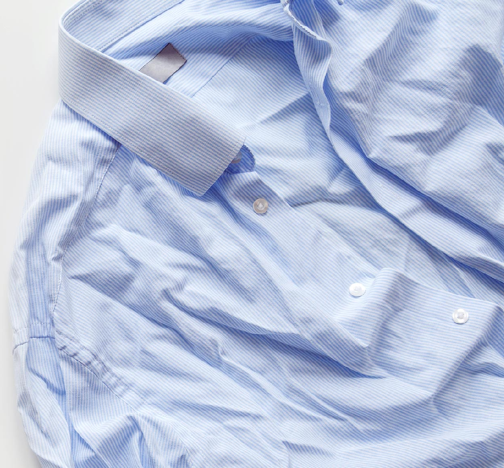
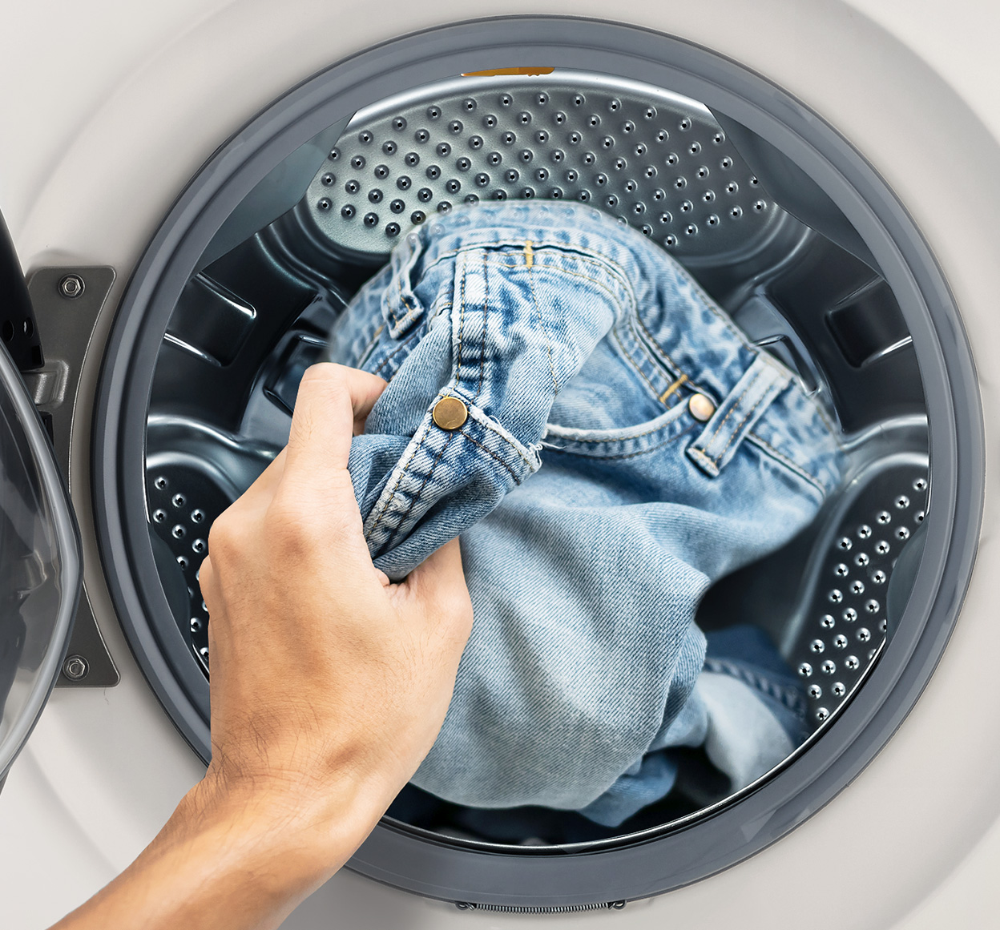
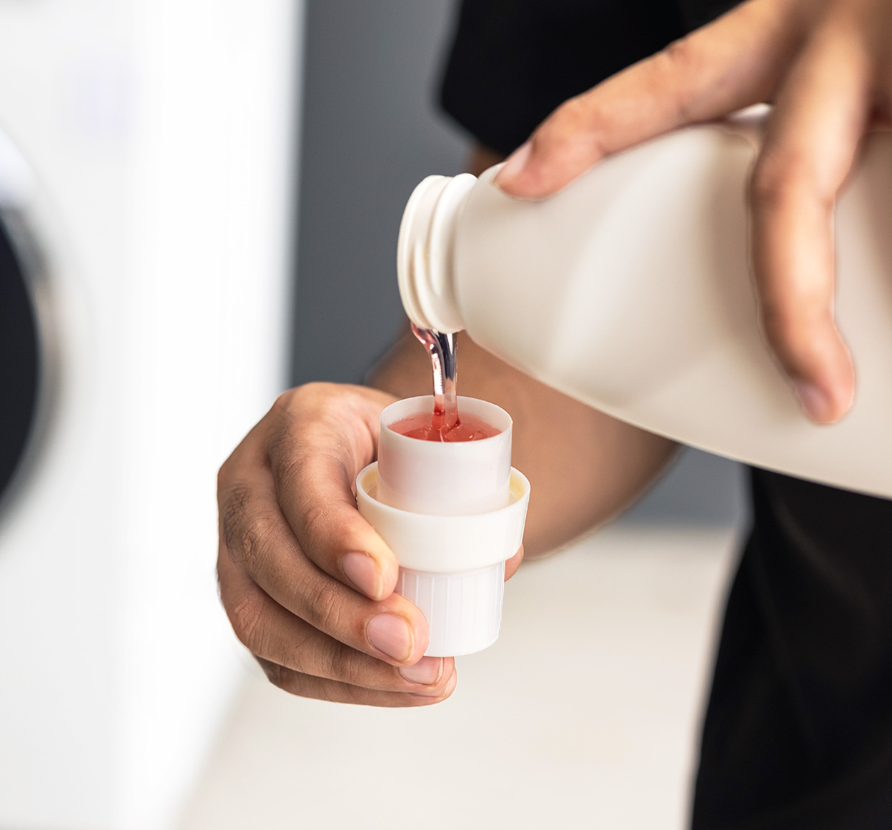
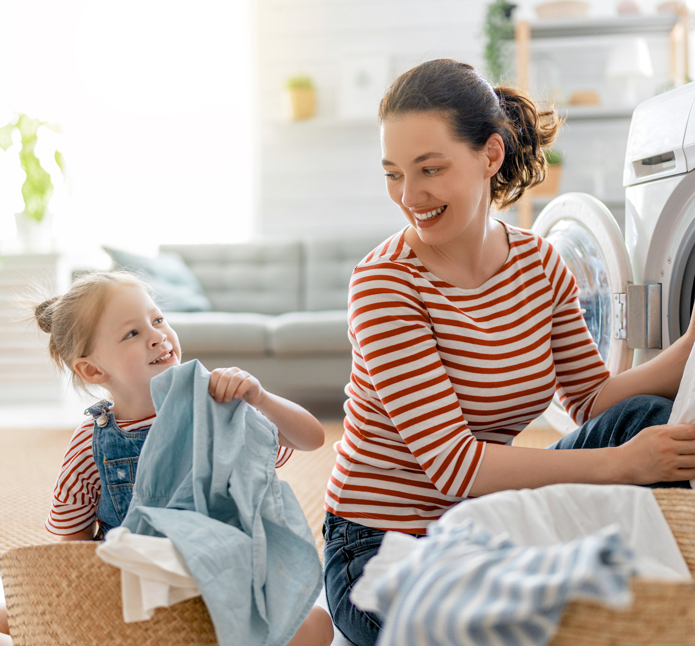

의류세탁기


보다 더 스마트한 일상
LG ThinQ의 시작

보다 더 스마트한 일상, LG ThinQ
씽큐는 사람과 가전을 AI 기술로 연결하여 더 편리하고 놀라운 일상을 만드는 LG전자의 스마트 홈 플랫폼입니다.
* 본 콘텐츠는 ThinQ 앱의 콘텐츠입니다.
세탁기 돌릴 때 몸이 먼저 반응하는 세탁습관, 조금만 신경 쓰면 옷을 보호할 수 있다고 해요.

단추 구멍 늘어남 방지를 위해!
옷 모양이 바뀌는 걸 막기 위해 단추가 있는 옷은 모두 잠그고 세탁하시나요? 이럴 경우 다른 옷과 엉키거나 물에 휩쓸리면서 단추 구멍이 당겨져 늘어난다고 해요.
단추는 모두 열고 세탁하는 것이 가장 좋지만 옷 모양 변형이 여전히 신경 쓰인다면 한두 개 정도만 잠가 세탁하는 걸 추천해요.

청바지로 인한 옷 상함 방지
청바지는 지퍼를 채운 후 뒤집어서 세탁하는 것이 좋아요. 다른 얇은 소재와 같이 세탁할 경우 지퍼의 금속이 다른 옷을 상하게 할 수 있기 때문이죠.
또한 뜨거운 물로 세탁하면 색상에 변형이 일어날 수 있으니 찬물에 중성세제를 정량보다 적게 넣어 세탁해주세요.

세탁기별로 맞는 세제 사용
일반 세탁기는 세탁 통이 좌우로 회전하면서 세탁하지만 드럼 세탁기는 옷을 위에서 아래로 떨어뜨리는 낙차 원리를 이용해요. 따라서 거품이 많이 나면 빨래에 가해지는 압력이 줄어들기 때문에 드럼세탁기 전용 세제에는 거품을 줄여주는 소포제가 들어 있답니다.
때문에 드럼 세탁기에 일반 세제를 넣으면 거품 때문에 옷에 가해지는 압력도 줄고 물 사용량도 많아지니 세탁기별로 맞는 세제를 사용해야 해요.

소소한 습관으로 아껴지는 옷
소소한 세탁법이지만, 이것만 해도 아끼는 옷을 더 오래 입을 수 있어요. 원래 뭐든 작은 습관이 더 중요하잖아요.
세탁기 '동작' 버튼을 누르기 전, 단추는 정리하고 청바지는 뒤집고! 지금부터 한 번 시도해보세요!


LG ThinQ
ThinQ 하나로 더 좋아지는 일상
일상을 더 편하고 스마트하게 만들어주는 씽큐 앱을 지금 바로 만나보세요.
- #세탁기
- #세탁방법
- #세탁팁
- #세제사용
- #셔츠세탁
- #청바지